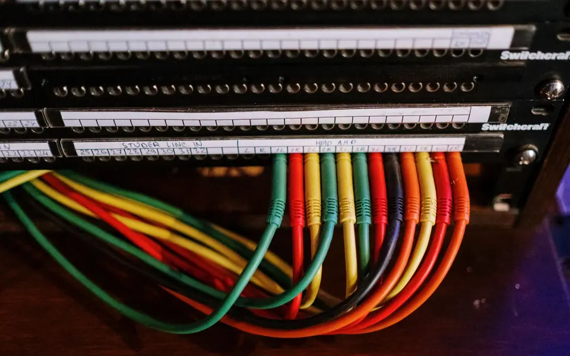
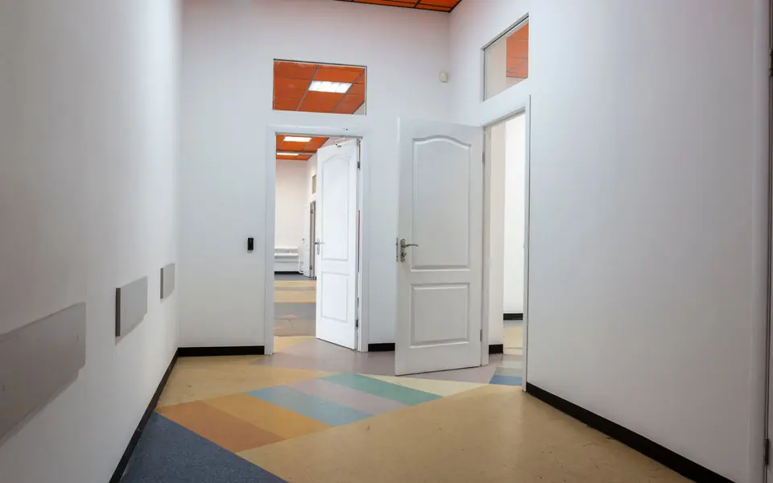
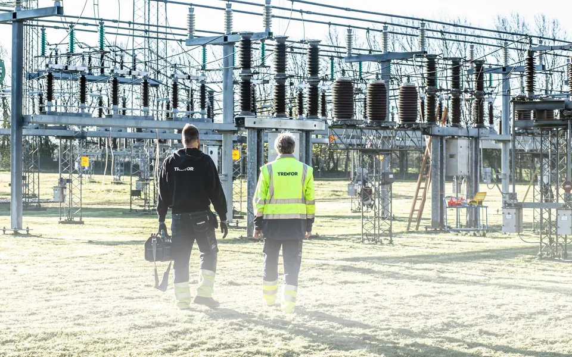

Latestהכי חדשNeueste BeiträgeLes plus récentsLo más reciente
Flow in every departmentFlow בכל מחלקהFlow in jeder AbteilungFlow dans chaque serviceFlow en cada departamento
6 articles6 כתבות6 Artikel6 articles6 artículosFlow in every departmentFlow בכל מחלקהFlow in jeder AbteilungFlow dans chaque serviceFlow en cada departamentoNewחדשNeuNouveauNuevoFlow in finance: from the email to the recordFlow בכספים: מהמייל עד הרשומהFlow in der Buchhaltung: von der E-Mail bis zur BuchungFlow en finance : de l’e-mail à l’écritureFlow en finanzas: del correo al asientoNov 13, 202613 בנובמבר 202613. November 202613 novembre 202613 de noviembre de 2026 · 3 min read3 דק׳ קריאה3 Min. Lesezeit3 min de lecture3 min de lectura Flow in every departmentFlow בכל מחלקהFlow in jeder AbteilungFlow dans chaque serviceFlow en cada departamentoNewחדשNeuNouveauNuevoFlow in HR: from intake to the employee fileFlow במשאבי אנוש: מקליטה ועד תיק עובדFlow im Personalwesen: vom Eintritt bis zur PersonalakteFlow en RH : de l’arrivée au dossier du salariéFlow en recursos humanos: de la incorporación al expediente del empleadoNov 13, 202613 בנובמבר 202613. November 202613 novembre 202613 de noviembre de 2026 · 3 min read3 דק׳ קריאה3 Min. Lesezeit3 min de lecture3 min de lecturaFlow in every departmentFlow בכל מחלקהFlow in jeder AbteilungFlow dans chaque serviceFlow en cada departamentoNewחדשNeuNouveauNuevoFlow in operations: orders, suppliers and tasksFlow בתפעול: הזמנות, ספקים ומשימותFlow im Betrieb: Bestellungen, Lieferanten und AufgabenFlow dans les opérations : commandes, fournisseurs et tâchesFlow en operaciones: pedidos, proveedores y tareasNov 13, 202613 בנובמבר 202613. November 202613 novembre 202613 de noviembre de 2026 · 3 min read3 דק׳ קריאה3 Min. Lesezeit3 min de lecture3 min de lectura
Flow in every departmentFlow בכל מחלקהFlow in jeder AbteilungFlow dans chaque serviceFlow en cada departamentoNewחדשNeuNouveauNuevoFlow in HR: from intake to the employee fileFlow במשאבי אנוש: מקליטה ועד תיק עובדFlow im Personalwesen: vom Eintritt bis zur PersonalakteFlow en RH : de l’arrivée au dossier du salariéFlow en recursos humanos: de la incorporación al expediente del empleadoNov 13, 202613 בנובמבר 202613. November 202613 novembre 202613 de noviembre de 2026 · 3 min read3 דק׳ קריאה3 Min. Lesezeit3 min de lecture3 min de lecturaFlow in every departmentFlow בכל מחלקהFlow in jeder AbteilungFlow dans chaque serviceFlow en cada departamentoNewחדשNeuNouveauNuevoFlow in operations: orders, suppliers and tasksFlow בתפעול: הזמנות, ספקים ומשימותFlow im Betrieb: Bestellungen, Lieferanten und AufgabenFlow dans les opérations : commandes, fournisseurs et tâchesFlow en operaciones: pedidos, proveedores y tareasNov 13, 202613 בנובמבר 202613. November 202613 novembre 202613 de noviembre de 2026 · 3 min read3 דק׳ קריאה3 Min. Lesezeit3 min de lecture3 min de lectura Flow in every departmentFlow בכל מחלקהFlow in jeder AbteilungFlow dans chaque serviceFlow en cada departamentoNewחדשNeuNouveauNuevoFlow in sales: from lead to a proposal in the systemFlow במכירות: מליד ועד הצעה במערכתFlow im Vertrieb: von der Anfrage bis zum Angebot im SystemFlow dans les ventes : du prospect à la proposition dans le systèmeFlow en ventas: del contacto a la propuesta en el sistemaNov 13, 202613 בנובמבר 202613. November 202613 novembre 202613 de noviembre de 2026 · 3 min read3 דק׳ קריאה3 Min. Lesezeit3 min de lecture3 min de lecturaFlow in every departmentFlow בכל מחלקהFlow in jeder AbteilungFlow dans chaque serviceFlow en cada departamentoNewחדשNeuNouveauNuevoFlow in customer service: from inquiry to resolutionFlow בשירות לקוחות: מפנייה לטיפולFlow im Kundenservice: von der Anfrage bis zur LösungFlow au service client : de la demande à la résolutionFlow en atención al cliente: de la consulta a la soluciónNov 13, 202613 בנובמבר 202613. November 202613 novembre 202613 de noviembre de 2026 · 3 min read3 דק׳ קריאה3 Min. Lesezeit3 min de lecture3 min de lecturaFlow in every departmentFlow בכל מחלקהFlow in jeder AbteilungFlow dans chaque serviceFlow en cada departamentoNewחדשNeuNouveauNuevoFlow in legal: requests, contracts and follow-upFlow במשפטית: בקשות, חוזים ומעקבFlow in der Rechtsabteilung: Anfragen, Verträge und FristenFlow au service juridique : demandes, contrats et suiviFlow en el área legal: solicitudes, contratos y seguimientoNov 13, 202613 בנובמבר 202613. November 202613 novembre 202613 de noviembre de 2026 · 3 min read3 דק׳ קריאה3 Min. Lesezeit3 min de lecture3 min de lectura
Flow in every departmentFlow בכל מחלקהFlow in jeder AbteilungFlow dans chaque serviceFlow en cada departamentoNewחדשNeuNouveauNuevoFlow in sales: from lead to a proposal in the systemFlow במכירות: מליד ועד הצעה במערכתFlow im Vertrieb: von der Anfrage bis zum Angebot im SystemFlow dans les ventes : du prospect à la proposition dans le systèmeFlow en ventas: del contacto a la propuesta en el sistemaNov 13, 202613 בנובמבר 202613. November 202613 novembre 202613 de noviembre de 2026 · 3 min read3 דק׳ קריאה3 Min. Lesezeit3 min de lecture3 min de lecturaFlow in every departmentFlow בכל מחלקהFlow in jeder AbteilungFlow dans chaque serviceFlow en cada departamentoNewחדשNeuNouveauNuevoFlow in customer service: from inquiry to resolutionFlow בשירות לקוחות: מפנייה לטיפולFlow im Kundenservice: von der Anfrage bis zur LösungFlow au service client : de la demande à la résolutionFlow en atención al cliente: de la consulta a la soluciónNov 13, 202613 בנובמבר 202613. November 202613 novembre 202613 de noviembre de 2026 · 3 min read3 דק׳ קריאה3 Min. Lesezeit3 min de lecture3 min de lecturaFlow in every departmentFlow בכל מחלקהFlow in jeder AbteilungFlow dans chaque serviceFlow en cada departamentoNewחדשNeuNouveauNuevoFlow in legal: requests, contracts and follow-upFlow במשפטית: בקשות, חוזים ומעקבFlow in der Rechtsabteilung: Anfragen, Verträge und FristenFlow au service juridique : demandes, contrats et suiviFlow en el área legal: solicitudes, contratos y seguimientoNov 13, 202613 בנובמבר 202613. November 202613 novembre 202613 de noviembre de 2026 · 3 min read3 דק׳ קריאה3 Min. Lesezeit3 min de lecture3 min de lectura
How Flow worksאיך Flow עובדתSo funktioniert FlowComment fonctionne FlowCómo funciona Flow
4 articles4 כתבות4 Artikel4 articles4 artículos


The work runs, you approveהעבודה רצה, אתם מאשריםDie Arbeit läuft, Sie geben freiLe travail avance, vous validezEl trabajo avanza, usted aprueba
8 articles8 כתבות8 Artikel8 articles8 artículosWorkflowsתהליכי עבודהArbeitsabläufeProcessusProcesosWho approves, AI or RPA?מי מאשר, AI או RPA?Wer gibt frei, KI oder RPA?Qui valide, l’IA ou la RPA ?¿Quién aprueba, la IA o la RPA?Oct 28, 202628 באוקטובר 202628. Oktober 202628 octobre 202628 de octubre de 2026 · 3 min read3 דק׳ קריאה3 Min. Lesezeit3 min de lecture3 min de lectura Product architectureארכיטקטורת המוצרProduktarchitekturArchitecture produitArquitectura de productoAction Graph: knowledge without raw dataAction Graph: ידע בלי נתוני גלםAction Graph: Wissen ohne RohdatenAction Graph : le savoir sans les données brutesAction Graph: el conocimiento sin los datos en brutoAug 31, 202631 באוגוסט 202631. August 202631 août 202631 de agosto de 2026 · 3 min read3 דק׳ קריאה3 Min. Lesezeit3 min de lecture3 min de lecturaAI architectureארכיטקטורת AIKI-ArchitekturArchitecture IAArquitectura de IAOversight people actually useבקרה שאנשים באמת משתמשים בהAufsicht, die Menschen wirklich nutzenUn contrôle que les gens utilisent vraimentUna supervisión que la gente usa de verdadAug 31, 202631 באוגוסט 202631. August 202631 août 202631 de agosto de 2026 · 3 min read3 דק׳ קריאה3 Min. Lesezeit3 min de lecture3 min de lectura
Product architectureארכיטקטורת המוצרProduktarchitekturArchitecture produitArquitectura de productoAction Graph: knowledge without raw dataAction Graph: ידע בלי נתוני גלםAction Graph: Wissen ohne RohdatenAction Graph : le savoir sans les données brutesAction Graph: el conocimiento sin los datos en brutoAug 31, 202631 באוגוסט 202631. August 202631 août 202631 de agosto de 2026 · 3 min read3 דק׳ קריאה3 Min. Lesezeit3 min de lecture3 min de lecturaAI architectureארכיטקטורת AIKI-ArchitekturArchitecture IAArquitectura de IAOversight people actually useבקרה שאנשים באמת משתמשים בהAufsicht, die Menschen wirklich nutzenUn contrôle que les gens utilisent vraimentUna supervisión que la gente usa de verdadAug 31, 202631 באוגוסט 202631. August 202631 août 202631 de agosto de 2026 · 3 min read3 דק׳ קריאה3 Min. Lesezeit3 min de lecture3 min de lectura Architecture and securityארכיטקטורה ואבטחהArchitektur und SicherheitArchitecture et sécuritéArquitectura y seguridadAI you can auditמערכת AI שאפשר לבקרKI, die sich prüfen lässtUne IA que l’on peut auditerUna IA que se puede auditarAug 31, 202631 באוגוסט 202631. August 202631 août 202631 de agosto de 2026 · 3 min read3 דק׳ קריאה3 Min. Lesezeit3 min de lecture3 min de lecturaAI architectureארכיטקטורת AIKI-ArchitekturArchitecture IAArquitectura de IATrace an AI decisionלעקוב אחרי החלטת AIEine KI-Entscheidung nachverfolgenRetracer une décision d’IACómo rastrear una decisión de IAAug 31, 202631 באוגוסט 202631. August 202631 août 202631 de agosto de 2026 · 3 min read3 דק׳ קריאה3 Min. Lesezeit3 min de lecture3 min de lectura
Architecture and securityארכיטקטורה ואבטחהArchitektur und SicherheitArchitecture et sécuritéArquitectura y seguridadAI you can auditמערכת AI שאפשר לבקרKI, die sich prüfen lässtUne IA que l’on peut auditerUna IA que se puede auditarAug 31, 202631 באוגוסט 202631. August 202631 août 202631 de agosto de 2026 · 3 min read3 דק׳ קריאה3 Min. Lesezeit3 min de lecture3 min de lecturaAI architectureארכיטקטורת AIKI-ArchitekturArchitecture IAArquitectura de IATrace an AI decisionלעקוב אחרי החלטת AIEine KI-Entscheidung nachverfolgenRetracer une décision d’IACómo rastrear una decisión de IAAug 31, 202631 באוגוסט 202631. August 202631 août 202631 de agosto de 2026 · 3 min read3 דק׳ קריאה3 Min. Lesezeit3 min de lecture3 min de lectura AI infrastructureתשתית AIKI-InfrastrukturInfrastructure IAInfraestructura de IAA validated model does not stay validatedמודל שאושר לא נשאר מאושרEin validiertes Modell bleibt nicht validiertUn modèle validé ne le reste pasUn modelo validado no se queda validadoAug 31, 202631 באוגוסט 202631. August 202631 août 202631 de agosto de 2026 · 3 min read3 דק׳ קריאה3 Min. Lesezeit3 min de lecture3 min de lectura
AI infrastructureתשתית AIKI-InfrastrukturInfrastructure IAInfraestructura de IAA validated model does not stay validatedמודל שאושר לא נשאר מאושרEin validiertes Modell bleibt nicht validiertUn modèle validé ne le reste pasUn modelo validado no se queda validadoAug 31, 202631 באוגוסט 202631. August 202631 août 202631 de agosto de 2026 · 3 min read3 דק׳ קריאה3 Min. Lesezeit3 min de lecture3 min de lectura The work runs, you approveהעבודה רצה, אתם מאשריםDie Arbeit läuft, Sie geben freiLe travail avance, vous validezEl trabajo avanza, usted apruebaNewחדשNeuNouveauNuevoWho is in control: approvals, permissions and cancellationמי בשליטה: אישורים, הרשאות וביטולWer die Kontrolle hat: Freigaben, Berechtigungen und RücknahmeQui garde la main : validations, droits d’accès et annulationQuién tiene el control: aprobaciones, permisos y cancelaciónNov 13, 202613 בנובמבר 202613. November 202613 novembre 202613 de noviembre de 2026 · 3 min read3 דק׳ קריאה3 Min. Lesezeit3 min de lecture3 min de lecturaThe work runs, you approveהעבודה רצה, אתם מאשריםDie Arbeit läuft, Sie geben freiLe travail avance, vous validezEl trabajo avanza, usted apruebaNewחדשNeuNouveauNuevoHow to measure time saved without inventing numbersאיך מודדים זמן שנחסך, בלי להמציא מספריםEingesparte Zeit messen, ohne Zahlen zu erfindenMesurer le temps gagné sans inventer de chiffresCómo medir el tiempo ahorrado sin inventarse cifrasNov 13, 202613 בנובמבר 202613. November 202613 novembre 202613 de noviembre de 2026 · 3 min read3 דק׳ קריאה3 Min. Lesezeit3 min de lecture3 min de lectura
The work runs, you approveהעבודה רצה, אתם מאשריםDie Arbeit läuft, Sie geben freiLe travail avance, vous validezEl trabajo avanza, usted apruebaNewחדשNeuNouveauNuevoWho is in control: approvals, permissions and cancellationמי בשליטה: אישורים, הרשאות וביטולWer die Kontrolle hat: Freigaben, Berechtigungen und RücknahmeQui garde la main : validations, droits d’accès et annulationQuién tiene el control: aprobaciones, permisos y cancelaciónNov 13, 202613 בנובמבר 202613. November 202613 novembre 202613 de noviembre de 2026 · 3 min read3 דק׳ קריאה3 Min. Lesezeit3 min de lecture3 min de lecturaThe work runs, you approveהעבודה רצה, אתם מאשריםDie Arbeit läuft, Sie geben freiLe travail avance, vous validezEl trabajo avanza, usted apruebaNewחדשNeuNouveauNuevoHow to measure time saved without inventing numbersאיך מודדים זמן שנחסך, בלי להמציא מספריםEingesparte Zeit messen, ohne Zahlen zu erfindenMesurer le temps gagné sans inventer de chiffresCómo medir el tiempo ahorrado sin inventarse cifrasNov 13, 202613 בנובמבר 202613. November 202613 novembre 202613 de noviembre de 2026 · 3 min read3 דק׳ קריאה3 Min. Lesezeit3 min de lecture3 min de lectura
Your data stays where you decideהמידע נשאר איפה שאתם קובעיםIhre Daten bleiben, wo Sie es festlegenVos données restent là où vous le décidezSus datos se quedan donde usted decide
9 articles9 כתבות9 Artikel9 articles9 artículos




Your industryהתעשייה שלכםIhre BrancheVotre secteurSu sector
20 articles20 כתבות20 Artikel20 articles20 artículosLegalמשפטRechtJuridiqueJurídicoLegal automation without breaking confidentialityאוטומציה משפטית בלי לפגוע בסודיותAutomatisierung in der Kanzlei ohne Bruch der VerschwiegenheitAutomatiser un cabinet sans rompre le secret professionnelAutomatizar un despacho sin romper el secreto profesionalAug 31, 202631 באוגוסט 202631. August 202631 août 202631 de agosto de 2026 · 3 min read3 דק׳ קריאה3 Min. Lesezeit3 min de lecture3 min de lecturaHealthcareבריאותGesundheitswesenSantéSanidadAI in healthcare: where PHI is processedAI בבריאות: איפה המידע מעובדKI im Gesundheitswesen: wo Patientendaten verarbeitet werdenL’IA en santé : où les données des patients sont traitéesIA en sanidad: dónde se procesan los datos de los pacientesOct 28, 202628 באוקטובר 202628. Oktober 202628 octobre 202628 de octubre de 2026 · 3 min read3 דק׳ קריאה3 Min. Lesezeit3 min de lecture3 min de lectura HealthcareבריאותGesundheitswesenSantéSanidadDesigning for HIPAA from day oneציות ל־HIPAA מהתכנוןVon Anfang an für HIPAA gebautConçu pour HIPAA dès le premier jourDiseñado para HIPAA desde el primer díaAug 31, 202631 באוגוסט 202631. August 202631 août 202631 de agosto de 2026 · 3 min read3 דק׳ קריאה3 Min. Lesezeit3 min de lecture3 min de lectura
HealthcareבריאותGesundheitswesenSantéSanidadDesigning for HIPAA from day oneציות ל־HIPAA מהתכנוןVon Anfang an für HIPAA gebautConçu pour HIPAA dès le premier jourDiseñado para HIPAA desde el primer díaAug 31, 202631 באוגוסט 202631. August 202631 août 202631 de agosto de 2026 · 3 min read3 דק׳ קריאה3 Min. Lesezeit3 min de lecture3 min de lectura FinanceפיננסיםFinanzenFinanceFinanzasData masking in financeהסוואת מידע בפיננסיםDatenmaskierung in der FinanzbrancheLe masquage des données en financeEnmascaramiento de datos en finanzasAug 31, 202631 באוגוסט 202631. August 202631 août 202631 de agosto de 2026 · 3 min read3 דק׳ קריאה3 Min. Lesezeit3 min de lecture3 min de lecturaInsuranceביטוחVersicherungAssuranceSegurosAI in insurance claims, fairlyתביעות ביטוח עם AI, בהוגנותKI in der Schadenbearbeitung, fairL’IA dans les sinistres, en toute équitéIA en siniestros, con equidadAug 31, 202631 באוגוסט 202631. August 202631 août 202631 de agosto de 2026 · 3 min read3 דק׳ קריאה3 Min. Lesezeit3 min de lecture3 min de lecturaGovernmentממשלÖffentlicher SektorSecteur publicSector públicoAI in government: the federal barAI בממשל: רף האבטחה הפדרליKI in der US-Bundesverwaltung: die MesslatteL’IA dans l’administration fédérale américaine : le niveau d’exigenceIA en la Administración federal de EE. UU.: el nivel exigidoAug 31, 202631 באוגוסט 202631. August 202631 août 202631 de agosto de 2026 · 3 min read3 דק׳ קריאה3 Min. Lesezeit3 min de lecture3 min de lecturaManufacturingתעשייהIndustrieIndustrieIndustriaAI in manufacturing and export controlAI בתעשייה ובקרת יצואKI in der Industrie und ExportkontrolleL’IA dans l’industrie et le contrôle des exportationsIA en la industria y el control de exportacionesAug 31, 202631 באוגוסט 202631. August 202631 août 202631 de agosto de 2026 · 3 min read3 דק׳ קריאה3 Min. Lesezeit3 min de lecture3 min de lecturaReal estateנדל״ן וטייטלImmobilienImmobilierInmobiliarioAI in title and escrow: wire fraudAI בטייטל ואסקרו: הונאות העברהKI bei Treuhand und Abwicklung: ÜberweisungsbetrugL’IA dans les transactions immobilières : la fraude au virementIA en las operaciones inmobiliarias: el fraude en transferenciasAug 31, 202631 באוגוסט 202631. August 202631 août 202631 de agosto de 2026 · 3 min read3 דק׳ קריאה3 Min. Lesezeit3 min de lecture3 min de lecturaHRמשאבי אנושPersonalwesenRHRR. HH.AI in hiring: bias and the lawAI בגיוס: הטיה ורגולציהKI in der Personalauswahl: Bias und RechtL’IA dans le recrutement : biais et droitIA en la selección de personal: sesgos y leyAug 31, 202631 באוגוסט 202631. August 202631 août 202631 de agosto de 2026 · 3 min read3 דק׳ קריאה3 Min. Lesezeit3 min de lecture3 min de lecturaPharmaפארמהPharmaPharmaFarmacéuticoAI in pharma: GxP and Part 11AI בפארמה: GxP ו־Part 11KI in der Pharmabranche: GxP und Part 11L’IA dans l’industrie pharmaceutique : BPx et Part 11IA en la industria farmacéutica: GxP y Part 11Aug 31, 202631 באוגוסט 202631. August 202631 août 202631 de agosto de 2026 · 3 min read3 דק׳ קריאה3 Min. Lesezeit3 min de lecture3 min de lectura
FinanceפיננסיםFinanzenFinanceFinanzasData masking in financeהסוואת מידע בפיננסיםDatenmaskierung in der FinanzbrancheLe masquage des données en financeEnmascaramiento de datos en finanzasAug 31, 202631 באוגוסט 202631. August 202631 août 202631 de agosto de 2026 · 3 min read3 דק׳ קריאה3 Min. Lesezeit3 min de lecture3 min de lecturaInsuranceביטוחVersicherungAssuranceSegurosAI in insurance claims, fairlyתביעות ביטוח עם AI, בהוגנותKI in der Schadenbearbeitung, fairL’IA dans les sinistres, en toute équitéIA en siniestros, con equidadAug 31, 202631 באוגוסט 202631. August 202631 août 202631 de agosto de 2026 · 3 min read3 דק׳ קריאה3 Min. Lesezeit3 min de lecture3 min de lecturaGovernmentממשלÖffentlicher SektorSecteur publicSector públicoAI in government: the federal barAI בממשל: רף האבטחה הפדרליKI in der US-Bundesverwaltung: die MesslatteL’IA dans l’administration fédérale américaine : le niveau d’exigenceIA en la Administración federal de EE. UU.: el nivel exigidoAug 31, 202631 באוגוסט 202631. August 202631 août 202631 de agosto de 2026 · 3 min read3 דק׳ קריאה3 Min. Lesezeit3 min de lecture3 min de lecturaManufacturingתעשייהIndustrieIndustrieIndustriaAI in manufacturing and export controlAI בתעשייה ובקרת יצואKI in der Industrie und ExportkontrolleL’IA dans l’industrie et le contrôle des exportationsIA en la industria y el control de exportacionesAug 31, 202631 באוגוסט 202631. August 202631 août 202631 de agosto de 2026 · 3 min read3 דק׳ קריאה3 Min. Lesezeit3 min de lecture3 min de lecturaReal estateנדל״ן וטייטלImmobilienImmobilierInmobiliarioAI in title and escrow: wire fraudAI בטייטל ואסקרו: הונאות העברהKI bei Treuhand und Abwicklung: ÜberweisungsbetrugL’IA dans les transactions immobilières : la fraude au virementIA en las operaciones inmobiliarias: el fraude en transferenciasAug 31, 202631 באוגוסט 202631. August 202631 août 202631 de agosto de 2026 · 3 min read3 דק׳ קריאה3 Min. Lesezeit3 min de lecture3 min de lecturaHRמשאבי אנושPersonalwesenRHRR. HH.AI in hiring: bias and the lawAI בגיוס: הטיה ורגולציהKI in der Personalauswahl: Bias und RechtL’IA dans le recrutement : biais et droitIA en la selección de personal: sesgos y leyAug 31, 202631 באוגוסט 202631. August 202631 août 202631 de agosto de 2026 · 3 min read3 דק׳ קריאה3 Min. Lesezeit3 min de lecture3 min de lecturaPharmaפארמהPharmaPharmaFarmacéuticoAI in pharma: GxP and Part 11AI בפארמה: GxP ו־Part 11KI in der Pharmabranche: GxP und Part 11L’IA dans l’industrie pharmaceutique : BPx et Part 11IA en la industria farmacéutica: GxP y Part 11Aug 31, 202631 באוגוסט 202631. August 202631 août 202631 de agosto de 2026 · 3 min read3 דק׳ קריאה3 Min. Lesezeit3 min de lecture3 min de lectura RetailקמעונאותHandelCommerceComercioAI in retail: customer privacyAI בקמעונאות: פרטיות לקוחותKI im Handel: Datenschutz für KundenL’IA dans le commerce : la vie privée des clientsIA en el comercio: la privacidad de los clientesAug 31, 202631 באוגוסט 202631. August 202631 août 202631 de agosto de 2026 · 3 min read3 דק׳ קריאה3 Min. Lesezeit3 min de lecture3 min de lecturaEnergyאנרגיהEnergieÉnergieEnergíaAI in critical infrastructureAI בתשתיות קריטיותKI in kritischen InfrastrukturenL’IA dans les infrastructures critiquesIA en infraestructuras críticasAug 31, 202631 באוגוסט 202631. August 202631 août 202631 de agosto de 2026 · 3 min read3 דק׳ קריאה3 Min. Lesezeit3 min de lecture3 min de lecturaTelecomתקשורתTelekommunikationTélécomsTelecomunicacionesAI in telecom: customer dataAI בתקשורת: מידע לקוחותKI in der Telekommunikation: KundendatenL’IA dans les télécoms : les données clientsIA en telecomunicaciones: los datos de los clientesAug 31, 202631 באוגוסט 202631. August 202631 août 202631 de agosto de 2026 · 3 min read3 דק׳ קריאה3 Min. Lesezeit3 min de lecture3 min de lecturaEducationחינוךBildungÉducationEducaciónAI in education: student dataAI בחינוך: מידע תלמידיםKI in der Bildung: SchülerdatenL’IA dans l’éducation : les données des élèvesIA en educación: los datos del alumnadoAug 31, 202631 באוגוסט 202631. August 202631 août 202631 de agosto de 2026 · 3 min read3 דק׳ קריאה3 Min. Lesezeit3 min de lecture3 min de lectura
RetailקמעונאותHandelCommerceComercioAI in retail: customer privacyAI בקמעונאות: פרטיות לקוחותKI im Handel: Datenschutz für KundenL’IA dans le commerce : la vie privée des clientsIA en el comercio: la privacidad de los clientesAug 31, 202631 באוגוסט 202631. August 202631 août 202631 de agosto de 2026 · 3 min read3 דק׳ קריאה3 Min. Lesezeit3 min de lecture3 min de lecturaEnergyאנרגיהEnergieÉnergieEnergíaAI in critical infrastructureAI בתשתיות קריטיותKI in kritischen InfrastrukturenL’IA dans les infrastructures critiquesIA en infraestructuras críticasAug 31, 202631 באוגוסט 202631. August 202631 août 202631 de agosto de 2026 · 3 min read3 דק׳ קריאה3 Min. Lesezeit3 min de lecture3 min de lecturaTelecomתקשורתTelekommunikationTélécomsTelecomunicacionesAI in telecom: customer dataAI בתקשורת: מידע לקוחותKI in der Telekommunikation: KundendatenL’IA dans les télécoms : les données clientsIA en telecomunicaciones: los datos de los clientesAug 31, 202631 באוגוסט 202631. August 202631 août 202631 de agosto de 2026 · 3 min read3 דק׳ קריאה3 Min. Lesezeit3 min de lecture3 min de lecturaEducationחינוךBildungÉducationEducaciónAI in education: student dataAI בחינוך: מידע תלמידיםKI in der Bildung: SchülerdatenL’IA dans l’éducation : les données des élèvesIA en educación: los datos del alumnadoAug 31, 202631 באוגוסט 202631. August 202631 août 202631 de agosto de 2026 · 3 min read3 דק׳ קריאה3 Min. Lesezeit3 min de lecture3 min de lectura Tradeסחר ומכסHandel und ZollCommerce et douaneComercio exteriorAI in customs and tradeAI במכס ובסחרKI in Zoll und AußenhandelL’IA dans la douane et le commerce internationalIA en aduanas y comercio internacionalAug 31, 202631 באוגוסט 202631. August 202631 août 202631 de agosto de 2026 · 3 min read3 דק׳ קריאה3 Min. Lesezeit3 min de lecture3 min de lectura
Tradeסחר ומכסHandel und ZollCommerce et douaneComercio exteriorAI in customs and tradeAI במכס ובסחרKI in Zoll und AußenhandelL’IA dans la douane et le commerce internationalIA en aduanas y comercio internacionalAug 31, 202631 באוגוסט 202631. August 202631 août 202631 de agosto de 2026 · 3 min read3 דק׳ קריאה3 Min. Lesezeit3 min de lecture3 min de lectura LegalמשפטRechtJuridiqueJurídicoGenerative AI in e-discoveryAI יוצר בגילוי מסמכים משפטיGenerative KI in der E-DiscoveryL’IA générative dans l’e-discoveryIA generativa en el e-discoveryAug 31, 202631 באוגוסט 202631. August 202631 août 202631 de agosto de 2026 · 3 min read3 דק׳ קריאה3 Min. Lesezeit3 min de lecture3 min de lecturaHealthcareבריאותGesundheitswesenSantéSanidadAI in telehealthAI ברפואה מרחוקKI in der TelemedizinL’IA en télémédecineIA en telemedicinaAug 31, 202631 באוגוסט 202631. August 202631 août 202631 de agosto de 2026 · 3 min read3 דק׳ קריאה3 Min. Lesezeit3 min de lecture3 min de lecturaFinanceפיננסיםFinanzenFinanceFinanzasAML and KYC with AIAML ו־KYC עם AIGeldwäscheprävention und KYC mit KILCB-FT et KYC avec l’IAPBC/FT y KYC con IAAug 31, 202631 באוגוסט 202631. August 202631 août 202631 de agosto de 2026 · 3 min read3 דק׳ קריאה3 Min. Lesezeit3 min de lecture3 min de lecturaInsuranceביטוחVersicherungAssuranceSegurosAI in insurance underwritingAI בחיתום ביטוחיKI in der RisikoprüfungL’IA dans la souscriptionIA en la suscripción de riesgosAug 31, 202631 באוגוסט 202631. August 202631 août 202631 de agosto de 2026 · 3 min read3 דק׳ קריאה3 Min. Lesezeit3 min de lecture3 min de lecturaLocal governmentשלטון מקומיKommunenCollectivitésAdministración localAI in local government and transparencyAI ברשויות ובשקיפותKI in Kommunen und TransparenzL’IA dans les collectivités et la transparenceIA en la administración local y la transparenciaAug 31, 202631 באוגוסט 202631. August 202631 août 202631 de agosto de 2026 · 3 min read3 דק׳ קריאה3 Min. Lesezeit3 min de lecture3 min de lectura
LegalמשפטRechtJuridiqueJurídicoGenerative AI in e-discoveryAI יוצר בגילוי מסמכים משפטיGenerative KI in der E-DiscoveryL’IA générative dans l’e-discoveryIA generativa en el e-discoveryAug 31, 202631 באוגוסט 202631. August 202631 août 202631 de agosto de 2026 · 3 min read3 דק׳ קריאה3 Min. Lesezeit3 min de lecture3 min de lecturaHealthcareבריאותGesundheitswesenSantéSanidadAI in telehealthAI ברפואה מרחוקKI in der TelemedizinL’IA en télémédecineIA en telemedicinaAug 31, 202631 באוגוסט 202631. August 202631 août 202631 de agosto de 2026 · 3 min read3 דק׳ קריאה3 Min. Lesezeit3 min de lecture3 min de lecturaFinanceפיננסיםFinanzenFinanceFinanzasAML and KYC with AIAML ו־KYC עם AIGeldwäscheprävention und KYC mit KILCB-FT et KYC avec l’IAPBC/FT y KYC con IAAug 31, 202631 באוגוסט 202631. August 202631 août 202631 de agosto de 2026 · 3 min read3 דק׳ קריאה3 Min. Lesezeit3 min de lecture3 min de lecturaInsuranceביטוחVersicherungAssuranceSegurosAI in insurance underwritingAI בחיתום ביטוחיKI in der RisikoprüfungL’IA dans la souscriptionIA en la suscripción de riesgosAug 31, 202631 באוגוסט 202631. August 202631 août 202631 de agosto de 2026 · 3 min read3 דק׳ קריאה3 Min. Lesezeit3 min de lecture3 min de lecturaLocal governmentשלטון מקומיKommunenCollectivitésAdministración localAI in local government and transparencyAI ברשויות ובשקיפותKI in Kommunen und TransparenzL’IA dans les collectivités et la transparenceIA en la administración local y la transparenciaAug 31, 202631 באוגוסט 202631. August 202631 août 202631 de agosto de 2026 · 3 min read3 דק׳ קריאה3 Min. Lesezeit3 min de lecture3 min de lectura

Glance, for personal useGlance, לשימוש אישיGlance, für den persönlichen GebrauchGlance, pour un usage personnelGlance, para uso personal
2 articles2 כתבות2 Artikel2 articles2 artículosGlanceGlanceGlanceGlanceGlanceClose it from Gmail with one Do Itסוגרים מג׳ימייל עם Do It אחדDirekt aus Gmail erledigen, mit einem Do ItTout régler depuis Gmail avec un seul Do ItResolverlo desde Gmail con un solo Do ItOct 28, 202628 באוקטובר 202628. Oktober 202628 octobre 202628 de octubre de 2026 · 3 min read3 דק׳ קריאה3 Min. Lesezeit3 min de lecture3 min de lecturaGlanceGlanceGlanceGlanceGlanceWhy Do It, not auto-actלמה Do It ולא פעולה אוטומטיתWarum Do It statt automatischer AktionPourquoi Do It plutôt qu’une action automatiquePor qué Do It y no una acción automáticaOct 28, 202628 באוקטובר 202628. Oktober 202628 octobre 202628 de octubre de 2026 · 3 min read3 דק׳ קריאה3 Min. Lesezeit3 min de lecture3 min de lectura
Next stepהצעד הבאDer nächste SchrittLa suiteEl siguiente paso
A deployment plan for your organization.תוכנית פריסה לארגון שלכם.Ein Einführungsplan für Ihre Organisation.Un plan de déploiement pour votre organisation.Un plan de implantación para su organización.
Get a deployment planקבלו תוכנית פריסהEinführungsplan anfordernObtenir un plan de déploiementObtener un plan de implantación